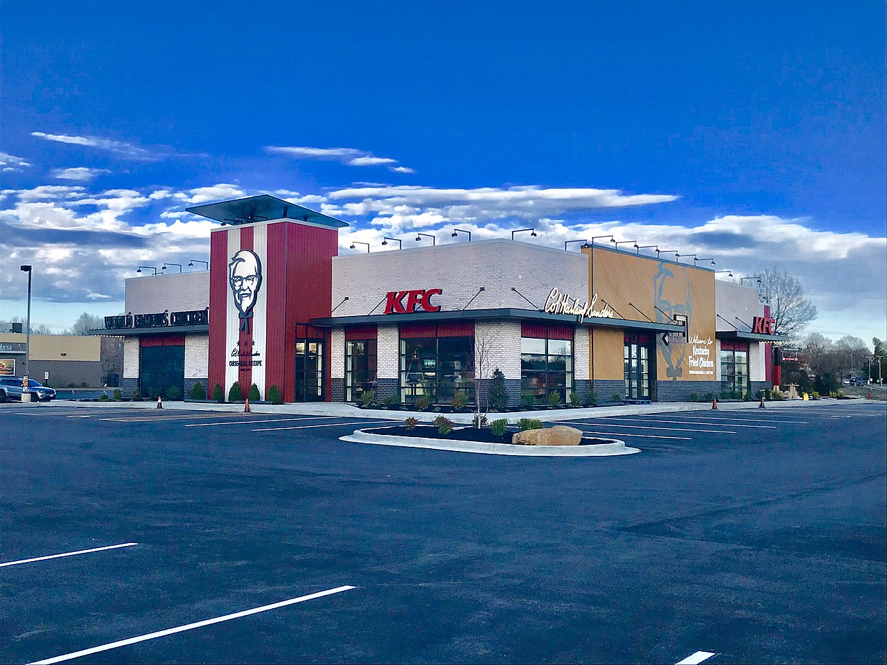

KFC (also commonly referred to by its historical name Kentucky Fried
Chicken) was founded by Colonel Harland
Sanders, an entrepreneur who began selling fried chicken from his roadside restaurant in Corbin, Kentucky,
during the Great Depression. Sanders identified the potential of restaurant franchising, and the first "Kentucky
Fried Chicken" franchise opened in Salt Lake City, Utah, in 1952. KFC popularized chicken in the fast-food
industry, diversifying the market by challenging the established dominance of the hamburger. Branding himself
"Colonel Sanders", the founder became a prominent figure of American cultural history, and his image remains
widely used in KFC advertising. The company's rapid expansion made it too large for Sanders to manage, so in
1964 he sold the company to a group of investors led by John Y. Brown Jr. and Jack C. Massey.
KFC was one of the first fast-food chains to expand internationally, opening outlets in Britain, Mexico, and
Jamaica by the mid-1960s. Throughout the 1970s and 80s, KFC experienced mixed success domestically, as it went
through a series of changes in corporate ownership with little or no experience in the restaurant business. In
the early 1970s, KFC was sold to the spirits distributor Heublein, which was taken over by the R. J. Reynolds
food and tobacco conglomerate, which later sold the chain to PepsiCo. The chain continued to expand overseas,
and in 1987 KFC became the first Western restaurant chain to open in China.
In 1997, PepsiCo spun off its restaurants division as Tricon Global Restaurants, which changed its name to Yum!
Brands in 2002. Yum! has proven to be a more focused owner than Pepsi, and although KFC's number of outlets has
declined in the US, the company has continued to grow in Asia, South America, and Africa. The chain has expanded
to 18,875 outlets across 118 countries and territories, with 4,563 outlets in China alone, KFC's largest market.
Harland Sanders was born in 1890 and raised on a farm outside Henryville, Indiana.[1] His father died in 1895,
and to make ends meet his mother took work at a canning plant.[2] As the eldest child at the age of five,
Sanders was left to care for his two siblings.[2] When he turned seven, his mother taught him how to cook.[1]
After leaving the family home at age 13, Sanders pursued several professions including railroad worker and
insurance salesman, with mixed success.[3] In 1930, he took over a Shell filling station on US Route 25 at the
point it split into east and west spurs[4] outside North Corbin, a small city on the edge of the Appalachian
Mountains.[2] By June, he had converted a storeroom into a small eating area using his own dining table, serving
meals such as steaks and country ham to travelers.[5]
The Harland Sanders Café and Museum
In 1934, Sanders took over the lease of the Pure Oil filling station on the other side of the road, due to its
greater visibility for motorists.[6] He then began to sell fried chicken.[7] To improve his skills, Sanders took
an eight-week restaurant-management course at the Cornell University School of Hotel Administration.[8] By 1936,
his business had proved successful enough for him to be given the honorary title of Kentucky colonel by Governor
Ruby Laffoon.[9] In 1937, Sanders expanded his restaurant to 140 seats, and in 1940 purchased a motel across the
street, the Sanders Court & Café.[10]
Sanders was dissatisfied with the 35 minutes it took to prepare his chicken in an iron frying pan, but he did
not want to deep fry. Although a much faster process, in Sanders' opinion it produced dry and crusty chicken
that was unevenly cooked.[11] On the other hand, if he prepared the chicken in advance of an order, there was
sometimes waste at the end of the day.[1] In 1939, the first commercial pressure cookers were released onto the
market, predominantly designed for steaming vegetables.[12] Sanders bought one and modified it into a pressure
fryer, which he then used to prepare chicken.[13] The new method reduced production time to be comparable with
deep frying, yet, in Sanders' opinion, retained the quality of pan-fried chicken.[11] In July 1940, Sanders
finalized what came to be known as his Original Recipe of 11 herbs and spices.[14] Although he never publicly
revealed the recipe, he admitted to the use of salt and pepper, and claimed that the ingredients "stand on
everybody's shelf".[10][15]
After being recommissioned as a Kentucky colonel in 1950 by Governor Lawrence Wetherby, Sanders began to dress
the part, growing a goatee and wearing a black frock coat (later switching to a white suit), a string tie, and
referring to himself as "Colonel".[10][16] His associates went along with the title change, "jokingly at first
and then in earnest", according to biographer Josh Ozersky.[17]
Early franchisees of KFC
The Sanders Court & Café generally served travelers, so when the route planned in 1955 for Interstate 75
bypassed Corbin, Sanders sold his properties and traveled the US to market his chicken concept to restaurant
owners.[18] Independent restaurant owners would pay four cents on each chicken sold as a franchise fee (later
increased to five cents), in exchange for Sanders' "secret blend of herbs and spices", his recipe and method,
and the right to advertise using his name and likeness.[1][19] In 1952, he had already successfully franchised
his chicken recipe to Pete Harman of South Salt Lake, Utah, the operator of one of the most prominent
restaurants in the city.[20]
Rodney L. Anderson, a sign painter from Roy, Utah who was hired by Harman, coined the name "Kentucky Fried
Chicken".[21] Sanders adopted the name because it distinguished his product from the deep-fried "Southern fried
chicken" product found in restaurants.[22] Harman claimed that in his first year of selling "Kentucky Fried
Chicken", his restaurant sales more than tripled, with 75 percent of the increase coming from the sale of fried
chicken.[23] In Utah, a product from Kentucky was exotic and evoked imagery of Southern hospitality.[21]
As a franchise-led operation, KFC's success depended on the work of the early franchisees. Harman has been
described as the "virtual co-founder" of the chain by Sanders' biographer.[24] Harman trademarked the phrase
"It's finger lickin' good", which was eventually adopted as a slogan across the entire chain.[19] In 1957,
Harman bundled 14 pieces of chicken, five bread rolls and a pint of gravy into a cardboard bucket, and offered
it to families as "a complete meal" for US$3.50 (around US$30 in 2014).[21] He first test-trialed the packaging
as a favor to Sanders, who had called on behalf of a Denver franchisee who did not know what to do with 500
cardboard buckets he had bought from a traveling salesman.[21]
By 1956, Sanders had six or eight franchisees, including Dave Thomas, who eventually founded the Wendy's
restaurant chain.[1][25] Thomas developed the rotating red bucket sign, was an early advocate of the take-out
concept that Harman had pioneered, and introduced a bookkeeping form that Sanders rolled out across the entire
KFC chain.[19][25][26] Thomas sold his shares in 1968 for US$1 million (around US$7 million in 2013), and became
regional manager for all KFC restaurants east of the Mississippi before founding Wendy's in 1969.[25][27]
In 1956, Sanders moved the company headquarters from Corbin to Shelbyville, Kentucky, which offered superior
transport links to distribute his spices, pressure cookers, take-out cartons and advertising material to
franchisees.[1][8]
In the 1960s, John Wayne Gacy purchased some KFC franchises; abused some of his workers around this time and
would start his murder spree later.[28]